Jornada • refinamento v2.4
Inspeção no navegador, com HUD e personagens. Specs · Correções e critérios · Verificações · Todas as cenas, diálogos e evoluções
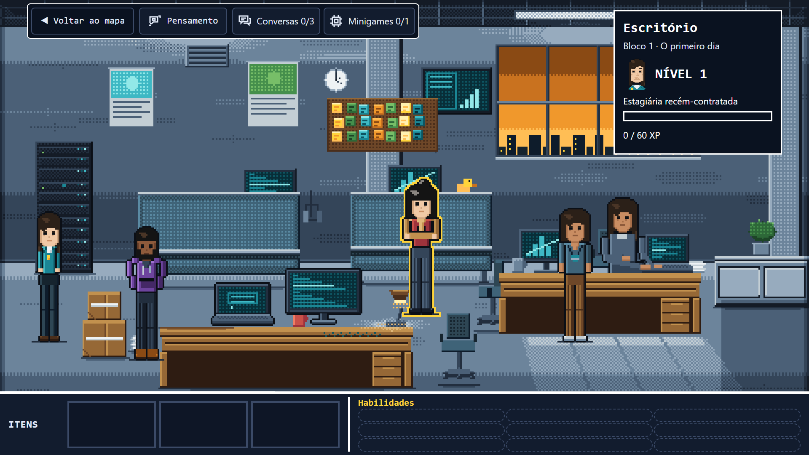
Escritório: HUD em coluna e colega no notebook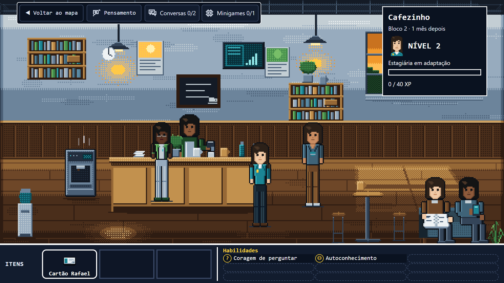
Cafezinho: sofá livre e rotina no balcão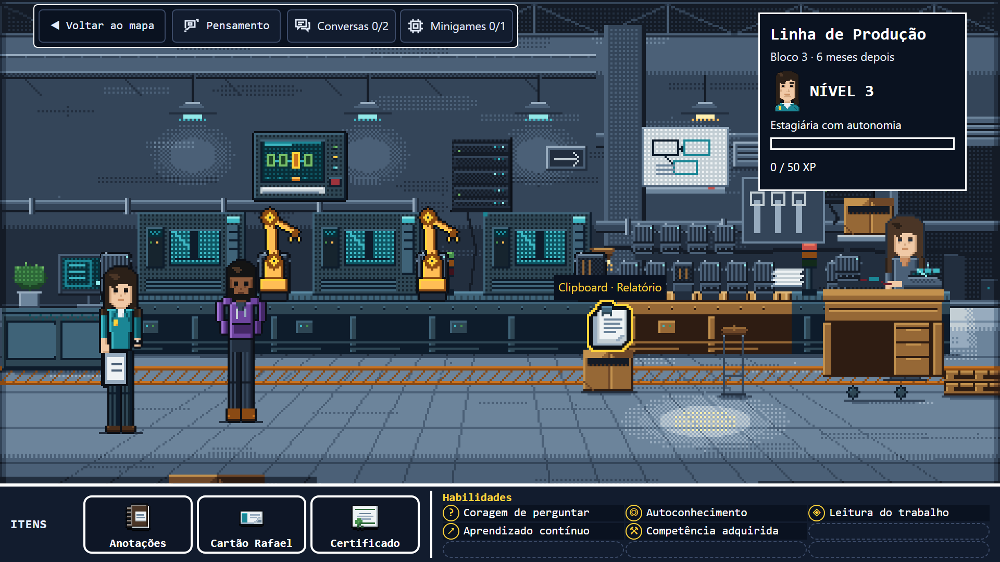
Produção: braços articulados e esteira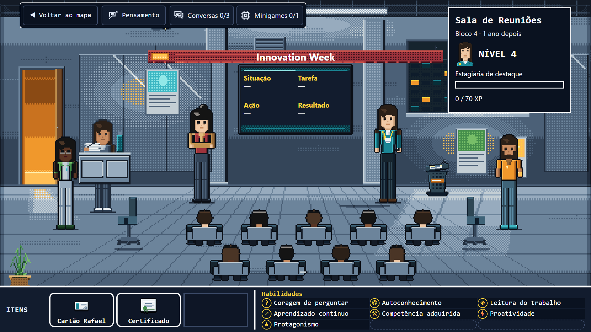
Apresentação: faixa, TV e plateia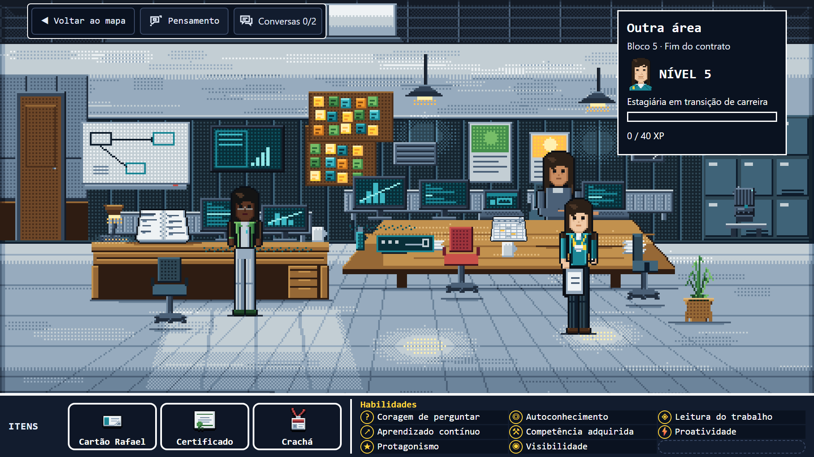
Outra área: posto ocupado, painel e amostra apoiada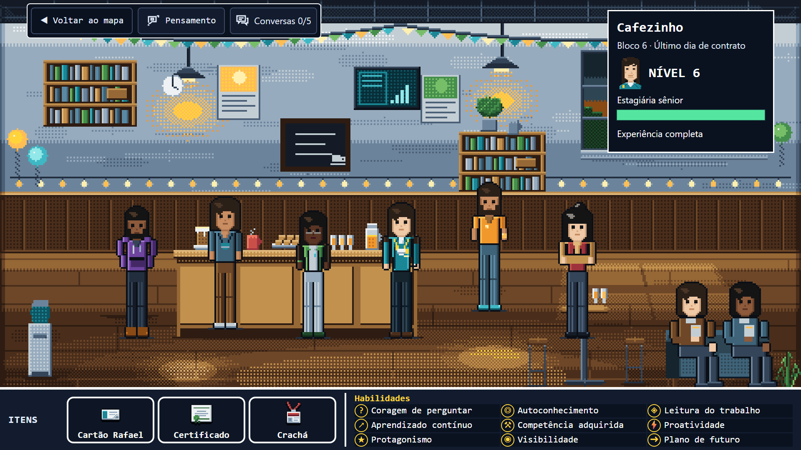
Encerramento: luzes e decoração do cafezinho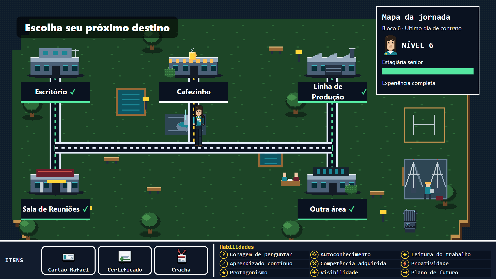
Campus com destinos descobertos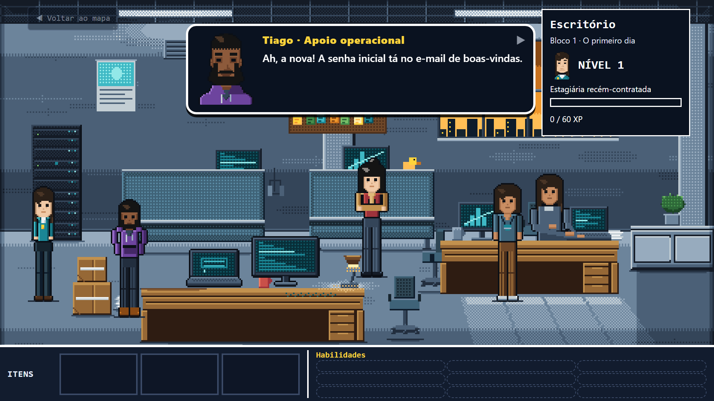
Diálogo sem sobrepor o nível ou os controles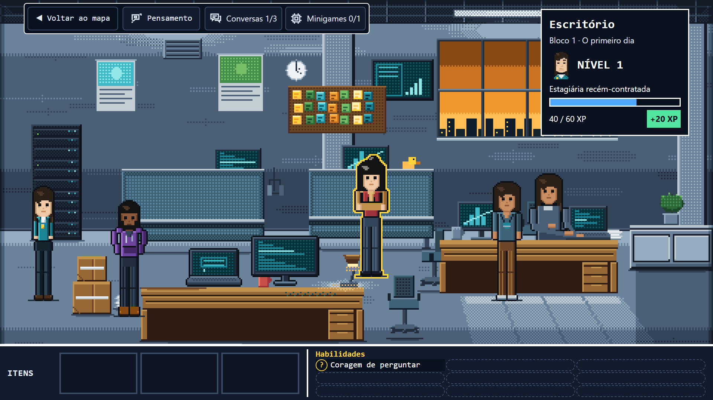
Ganho de XP preservado após modal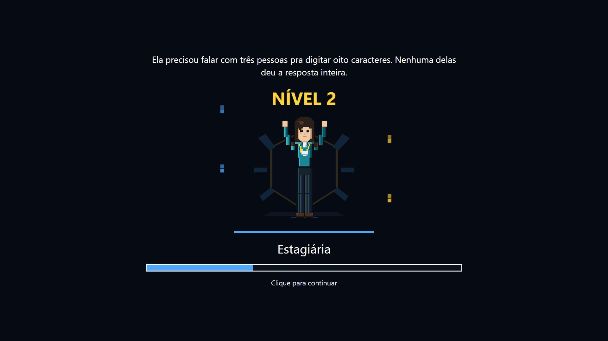
Pose de conquista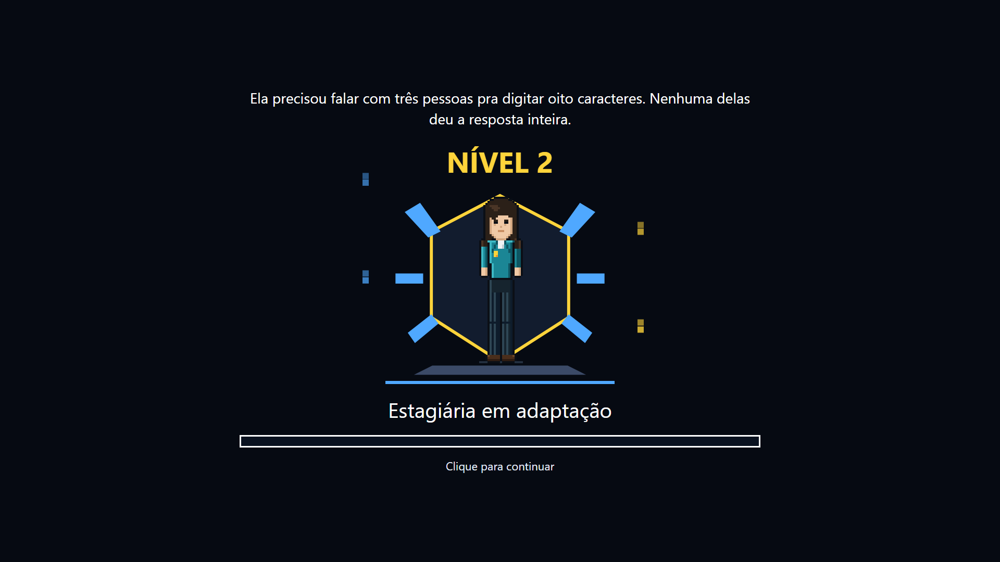
Novo visual da Ana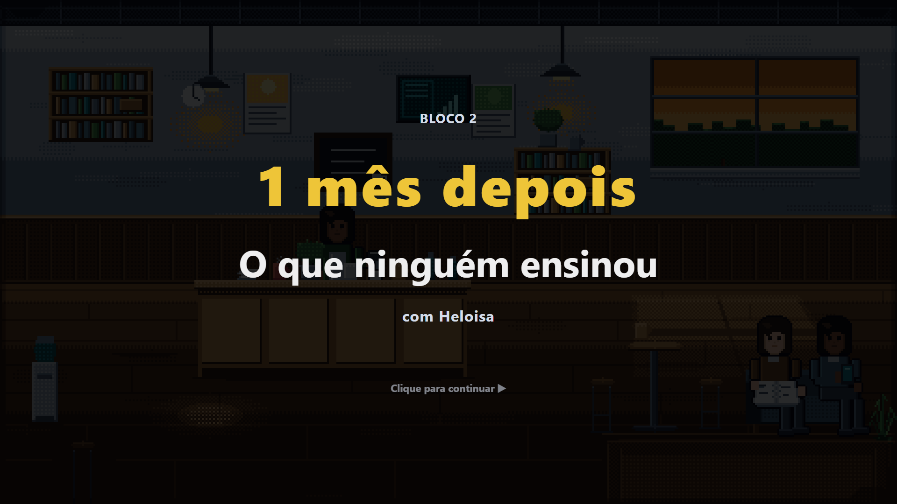
Próximo capítulo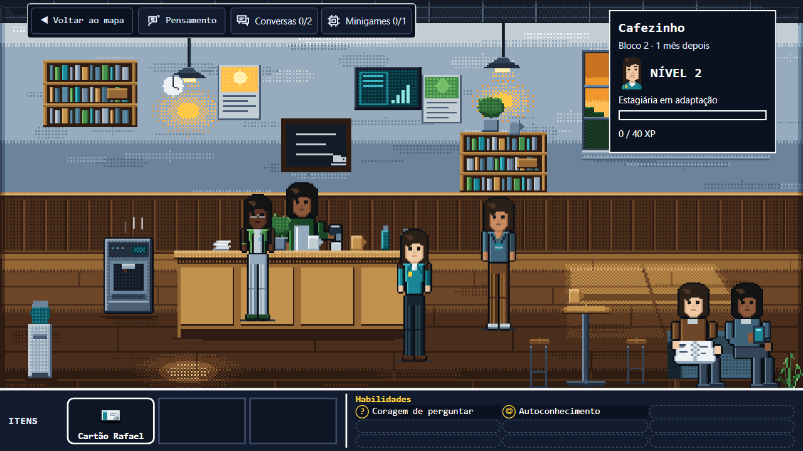
Composição em 1280 × 720